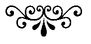

A Note on the Text and Dialect

Wuthering Heights, by “Ellis Bell,” was originally published by Thomas Newby in December of 1847, along with “Acton Bell’s” Agnes Grey. The two novels comprised a three-volume edition (or triple-decker), with the first two volumes consisting of Wuthering Heights (chapters 1 to 14 and chapters 15 to 34, respectively) and the final volume containing Agnes Grey. Because both novels appeared two months after the publication of “Currer Bell’s” Jane Eyre, speculation concerning the identity of the authors was immediately aroused, and many reviewers supposed that the three novels were the work of one pen—namely, that of “Currer Bell.” Charlotte Brontë sought to dispel this misapprehension. One such effort took the form of the “Biographical Notice” she wrote for new editions of Wuthering Heights and Agnes Grey, which were issued by her own publisher, Smith, Elder, in 1850, after the death of Emily, in December of 1848, and of Anne, in May of 1849. In this new edition of Wuthering Heights, which included a selection of Emily’s poems, Charlotte also undertook to correct many of the textual errors that had marred the first edition, as well as to change punctuation, spelling, and usage as she saw fit. The present text follows Charlotte’s 1850 version.
The dialect that appears throughout Wuthering Heights is generally referred to as “Yorkshire,” although it includes components of other northern English and Scottish dialects as well. Where the purport of dialect is not self-evident, footnotes in the text provide glosses of passages, in parts or in their entirety.
—Tatiana M. Holway